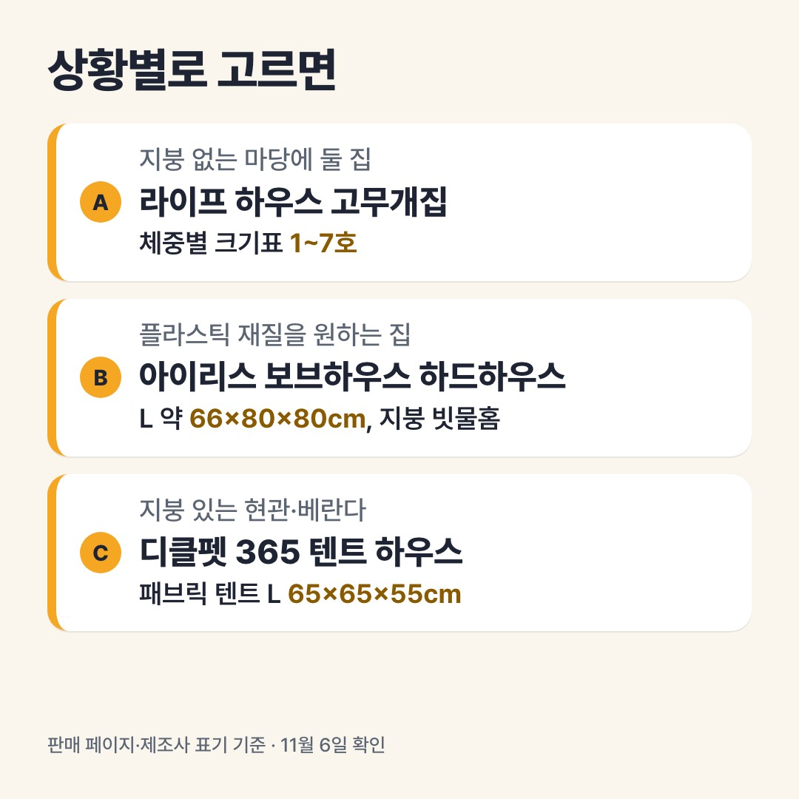

이 페이지는 쿠팡 파트너스 활동의 일환으로, 이에 따른 일정액의 수수료를 제공받습니다.
직접 써 본 후기가 아니라 판매 페이지의 사양표와 제조사 표기를 읽고 정리한 비교예요.
야외 개집 보온, 바닥 띄우고 입구 가리고 짚 까는 3가지
결론부터
- 마당에 두고 비바람을 막을 집이면 라이프 하우스 고무개집(11월 6일 표시가 27,000원, 몇 호 가격인지 표기 없음)을 보세요. 1~7호까지 체중별 크기표가 있고(진돗개는 4·5호 추천), 바닥 물빠짐 구멍과 긴 지붕창이 적혀 있어요.
- 플라스틱 재질의 집을 원하면 아이리스 보브하우스 하드하우스(브라운 L 67,410원, 11월 6일 쿠폰 적용가)를 보세요. L 약 66×80×80cm, 폴리프로필렌, 지붕에 빗물홈이 있다고 적혀 있어요.
- 현관이나 베란다처럼 바람이 덜 드는 곳에 둘 거면 디클펫 365 텐트 하우스(22,700원, 11월 6일 와우할인)도 후보예요. 패브릭에 뒷면이 메쉬라서, 늘 비바람을 맞는 마당용 설명은 없어요.
📅 가격은 11월 6일 확인값이에요. 지금 가격은 버튼에서 확인하세요.

블로그에서 자세한 비교 읽기다른 비교
이 포스팅은 토스쇼핑 쉐어링크 활동의 일환으로, 이에 따른 일정액의 수수료를 제공받습니다.
💸 토스에서 사는 생필품 보기사기 전 노트 블로그의 다른 비교 글